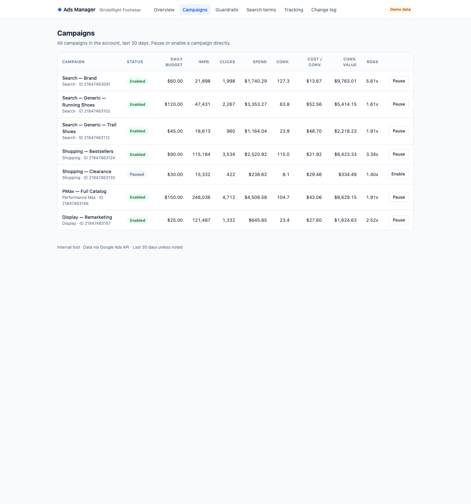
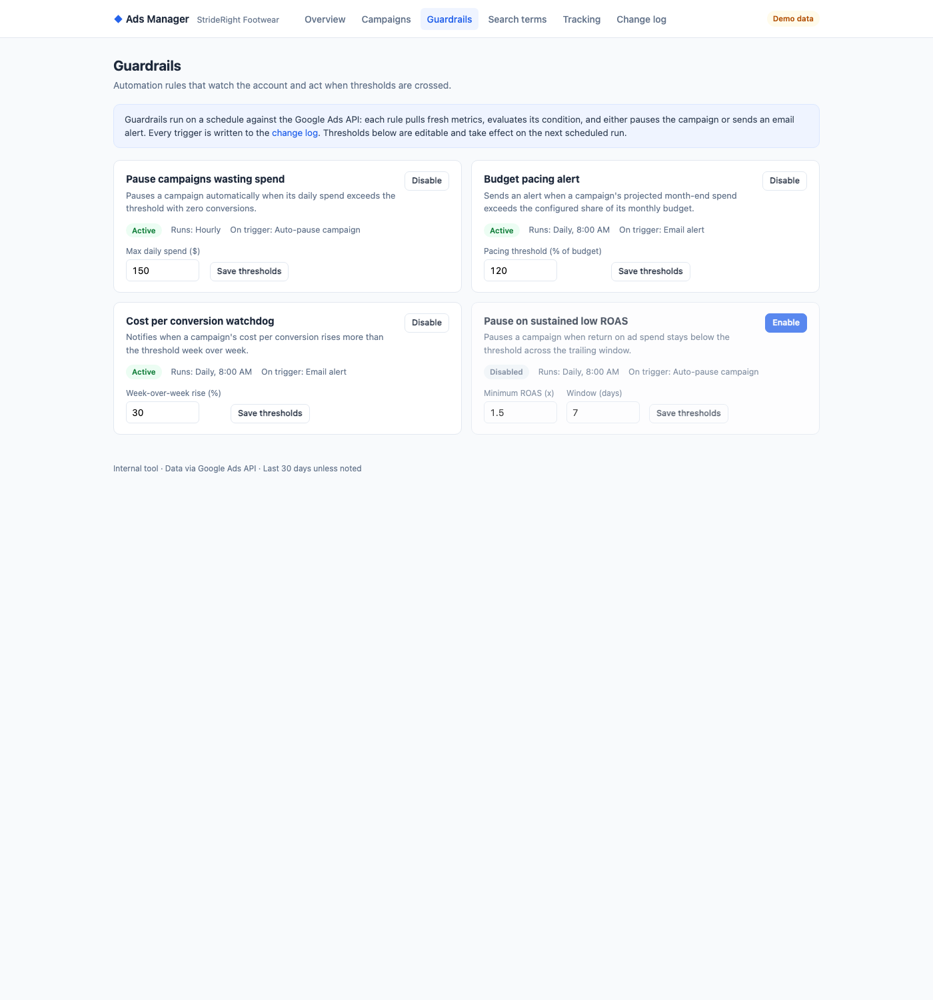
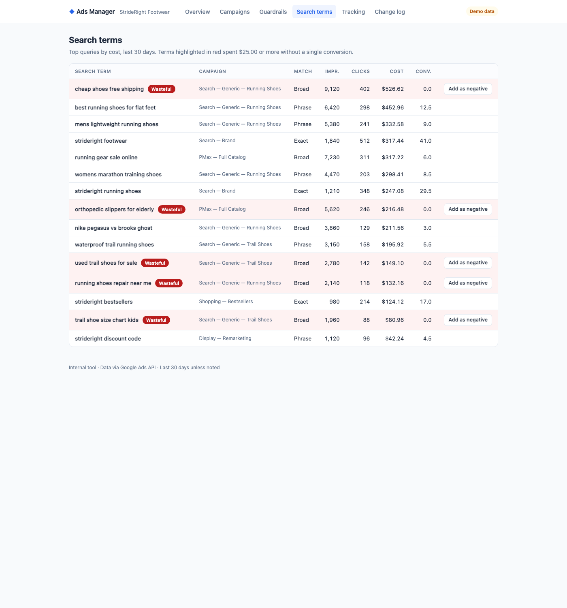
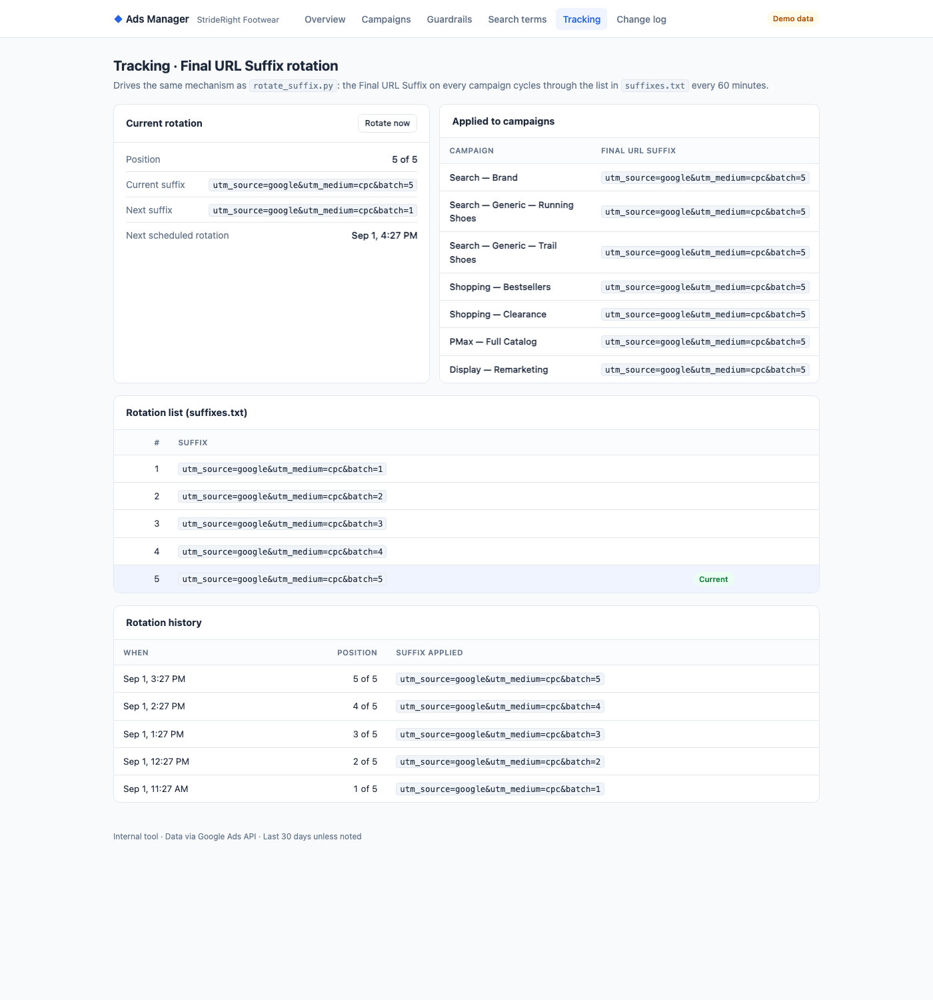
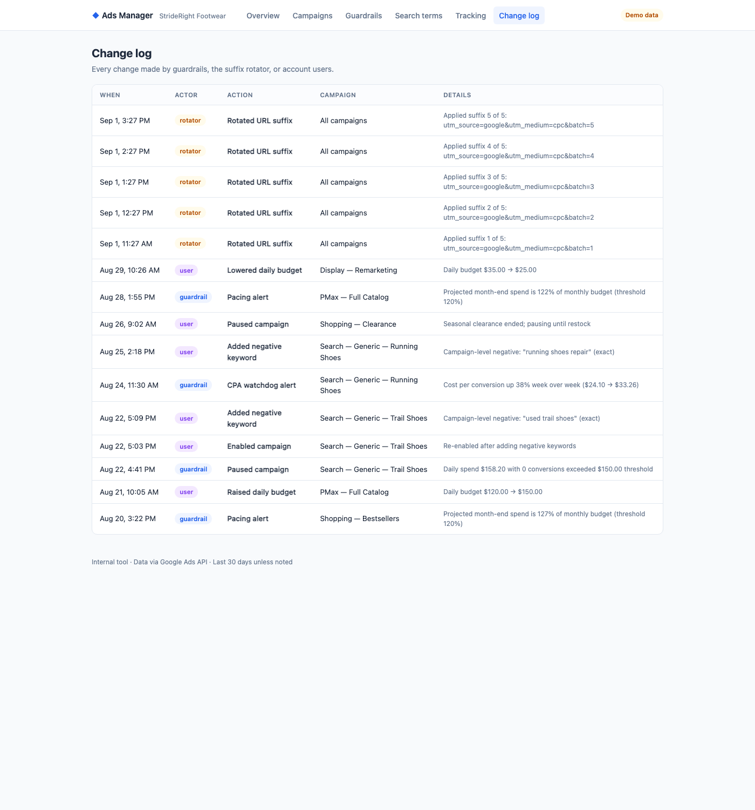

Inside the tool
Overview
The landing view: headline KPIs for the account, daily spend and conversion trends, and per-campaign performance at a glance.

Campaigns
Per-campaign budgets, performance, and status controls. Pausing or enabling a campaign takes effect in the account through the API and is written to the change log.

Guardrails
Automation rules with configurable thresholds. Enabled rules run against the account on a schedule and act through the API.

Search Terms
The search terms report with wasteful queries flagged. Adding a negative keyword is a single action, and it is written to the account immediately.

Tracking
Final URL Suffix management per campaign, with scheduled rotation of tracking values and a history of every rotation applied.

Change Log
The audit trail: every action taken by the tool — guardrail triggers, suffix rotations, status changes — with timestamps and details.
